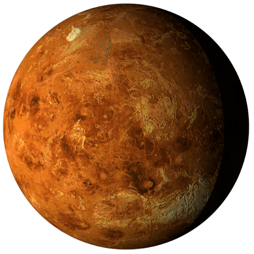

Es el más pequeño del sistema solar. No tiene atmósfera, ni lluvia en su superficie que está cubierta de agujeros por el choque de meteoritos.
Es el planeta brillante, porque cuando se mira a Venus desde la Tierra se le ve brillar como una estrella. Es un planeta en el que hace mucho calor, y hay muchos volcanes.

Es el único planeta conocido sobre el que hay agua líquida y vida. Es el Planeta Azul, porque visto de lejos parece azul. Está situada en un lugar perfecto en el espacio, si estuviera más cerca del Sol tendría mucho calor, y si estuviera más lejos haría mucho frío para que hubiera vida.El agua es vida porque los hombres, los animales y las plantas necesitan agua para vivir. La Tierra gira sobre si misma, dando lugar a los días y las noches.

Lo llaman planeta ROJO, por que su superficie tiene oxico de hierro, el suelo es de roca solida

Es el planeta más grande. Es una gigantesca bola de gas con grandes tempestades en su interior. Tiene lunas que giran alrededor de él, las más importantes se llaman Ío, Calisto, Ganímedes y Europa. En estas dos últimas, los científicos creen que puede haber vida porque tienen agua en forma de hielo.

Es el segundo planeta por su tamaño. Tiene anillos formados por rocas y hielo. También tiene muchas lunas, la más importante se llama Titán.

Es el planeta más frío del Sistema Solar. Gira muy inclinado sobre si mismo.

En él hay vientos muy violentos. Es el planeta más alejado de la Tierra, ya que Plutón no se considera un planeta por su pequeño tamaño.